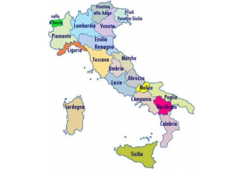
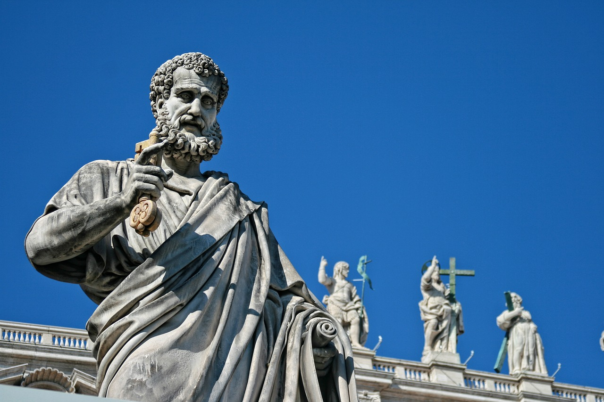

Bevezetés
Olaszország független ország Dél-Európában, amely magába foglalja a Pó folyó völgyét, az Appennini-félszigetet és a Földközi-tenger két legnagyobb szigetét, Szicíliát és Szardíniát, illetve számos kisebb szigetet. Északnyugatról Franciaország, északról Svájc és Ausztria, északkeletről Szlovénia, keletről az Adriai-tenger, délről a Jón- és a Földközi-tenger, nyugatról pedig a Tirrén- és a Ligur-tenger határolja. Területén található két enklávé, San Marino és a Vatikán, de Olaszországnak exklávéja is van, méghozzá Svájcban Campione d’Italia néven.
Olaszország számos jól ismert, befolyásos európai kultúra otthona volt, például az etruszkoké, a görögöké és a rómaiaké. Fővárosa, Róma, történelmi világváros mint az ókori Róma és a katolikus egyház bölcsője. Több mint 3000 éven keresztül az itt élő népek népvándorlásokat és inváziókat szenvedtek el, pl. az ókorban a kelták, a kora középkorban a germánok, frankok, majd a szaracénok és normannok által. Itália egyesítése (1861) előtt több hercegségből (pl. Firenze, Milánó, Pisa) és köztársaságból (pl. Velence, Genova, Amalfi), valamint a pápai államból állt, ezen városállamok részvételével háborúk pusztítottak. Az olasz monarchia és a világháborúk alatt az állam rengeteg konfliktuson esett át, mielőtt megalakult a mai Olasz Köztársaság.
Olaszország ma a magasan fejlett országok közé tartozik a világ 8. legnagyobb GDP-jével és a 28. legnagyobb emberi fejlettségi indexével. A G7 tagja, az Európai Unió és a NATO egyik alapítója.
Földrajz
Olaszország Dél-Európában, a Földközi-tenger középső medencéjébe nyúló, csizma alakú félszigeten, az Appennini-félszigeten fekszik, magába foglalva két nagy szigetet is, Szicíliát és Szardíniát, valamint sok kisebb szigetet a térségben. Az országot a Földközi-tenger különböző beltengerei és peremtengerei veszik körül, keletről az Adriai-tenger, nyugatról a Tirrén-tenger, délről a Jón-tenger és északnyugatról a Ligur-tenger. Az ország északi határvonalát az Alpok vonulatai adják. Olaszország területén enklávéként fekszik a Vatikán pápai állam és San Marino, ami a világ legrégibb köztársasága. Az ország teljes területe 301 230 négyzetkilométer, amivel a Föld 72. legnagyobb állama, ebből 294 020 km2 szárazföld és 7210 km2 víz. Olaszország domborzati szempontból öt nagytájra osztható, mégpedig az Alpokra (a Nyugat- és Kelet-Alpokból áll), a Pó-síkságra, az Appenninekre és a Szigetekre.
Vízrajz
Folyói
Olaszországban számos kis folyó található. Leghosszabb folyói a Pó (652 km) és az Adige (410 km). A Pó Torinótól az Adriai-tengerig hajózható. Az itáliai folyók többsége sekély, a nyári hónapokban medrük teljesen kiszárad, ezért hajózásra vagy ipari célokra nem alkalmasak. Az Appennini-félsziget leghosszabb folyói az Arno (241 km) és a Tevere (az egykori Tiberis).
Tavai
Olaszország legnagyobb tavai az Alpok lábánál fekszenek, mint a Garda-tó (Lago di Garda), a Lago Maggiore és a Comói-tó (Lago di Como).
Geológia
Olaszország aktív vulkánjai:- Az Etna: aktív vulkán Szícília keleti partján. Az 1190 km2-es területen fekvő hegy 3320 méteres magasságával Európa legnagyobb vulkánja. Az Etna két város, Messina és Catania közelében, a Simeto és az Alcantara folyók között fekszik a Riviera dei Ciclopinak nevezett vidéken. Magassága a kitörések során állandóan változik.
- A Vezúv: az európai kontinens egyetlen működő vulkánja Olaszország Campania régiójában, Nápolytól 9 km-rel keletre. Ismertségét elsősorban az i. sz. 79-es kitörésének köszönheti, amelynek eredményeként hamuja és lávája eltemette Pompeii, Herculaneum, Oplontis és Stabiae római településeket. Azóta számtalanszor kitört (utoljára 1944-ben). Napjaink egyik legveszélyesebb tűzhányójaként tartják számon, mivel közvetlen közelében több mint 3 millióan laknak.
- A Stromboli: a Lipari-szigetek legészakibb tagja, aktív tűzhányó.
- A Vulcano: a Lipari-szigetek legdélibb tagja, szunnyadó tűzhányó.
Történelem
Ókor
Olaszország területe már az i. e. 1. évezredben lakott volt, a félsziget északi részét az etruszk nép uralta, a görög telepesek pedig az Appennini-félsziget déli részét és Szicíliát hódították meg. Rómát i. e. 753-ban alapították az etruszkok. Róma államformája i. e. 509-ig királyság, utána köztársaság volt, majd császárság lett. A császárság korában a Római Birodalom területe folyamatosan növekedett. Traianus uralkodása alatt területe Angliától Szíriáig húzódott. 395-ben a birodalom kettészakadt Keletrómai és Nyugatrómai Birodalomra. 476-ban a Nyugatrómai Birodalmat megdöntötték a germánok.
Középkor és korai újkor
A korai középkorban Itália különböző fejedelemségekre bomlott, majd az érett és késő középkorban független városállamok alakultak ki. A félsziget déli része először Bizánc, később az arabok, majd a normannok uralma alá került, északi része pedig a Német-római Császársághoz. A középkor derekán már a francia királyok is versengtek a területért. Ekkor terjesztette ki világi hatalmát a római pápa is Közép-Itália jelentős részére. Ekkor lett nagyhatalom Velence.
A 18. század végére a Velencei Köztársaság hanyatlásnak indult, a félsziget középső részén két jelentősebb hatalom alakult ki: a Toszkánai Nagyhercegség és az egyházi állam. Bonaparte tábornok hódításai során Itáliát is elfoglalta, 1805-ben megalakította az első egységes Itáliai Királyságot, amelyet 1815-ig Franciaország császáraként uralt. I. Napóleon császár bukása után a bécsi kongresszus Dél-Itáliában helyreállította az olasz Bourbonok uralmát, Észak-Itáliában a Habsburg-fejedelemségeket (Toszkána, Parma), emellett a Habsburg Birodalom megszerezte Lombardia és a Velencei Köztársaság területét, megalapítva a Lombard–Velencei Királyságot.
Olasz egységállam
A 19. században megerősödött az egységes Olaszország megteremtését célzó mozgalom. Az egyesítést sem a Habsburg Birodalom, sem a pápai állam nem támogatta. Az 1848-ban Károly Albert szárd–piemonti király első egyesítési kísérletei még súlyos kudarcokba torkollottak, 1849-re Ausztria helyreállította hatalmát. Az egységmozgalom csak a Francia Császárság beavatkozásával tudott sikert elérni. A harcokban döntő szerepe lett Giuseppe Garibaldinak, aki felszabadította a félsziget déli részét és elűzte a Bourbon dinasztiát, valamint III. Napóleonnak, akinek hadserege az 1859-es solferinói csatában vereséget mért a Habsburg Birodalomra, megszerezve Lombardiát, amit átengedett a Szárd–Piemonti Királyságnak, cserébe Savoyáért és a Nizzai Grófságért.
Az egységes Olasz Királyság 1861-ben alakult meg a Szárd–Piemonti Királyságból, Ⅱ. Viktor Emánuel király koronája alatt. Veneto tartomány csak 1866-ban került az olasz államhoz, a porosz–osztrák–olasz háborúban elért porosz győzelem nyomán, a békekötés feltételeként. Róma elfoglalása és a pápák világi hatalmának megdöntése 1870-ben történt meg, amikor a pápai államot védelmező francia katonai kontingens a porosz–francia háború miatt a rajnai frontra irányították. Miután a szárd vezetésű királyi csapatok elfoglalták Rómát és az állam fővárosává tették, a világi birtokától megfosztott pápa a Vatikán és a Laterán területére vonult vissza, magát az „olasz állam foglyává” nyilvánította.
20. század
Olaszország – megszegve a korábban kötött szövetséget – területének növelésének céljából az Osztrák–Magyar Monarchia és a Német Birodalom ellen lépett be 1915-ben az első világháborúba. 1919-ben a saint-germaini békeszerződésben megkapta a korábban Ausztriához tartozott Tirol déli felét (a mai Dél-Tirolt és Trentinót), valamint az Isztriai-félszigetet. Utóbbinak egy részét az 1920-as rapallói egyezményben át kellett engednie az új Szerb–Horvát–Szlovén Királyságnak. Ez nem elégítette ki az olasz közvéleményt. 1922-ben Mussolini fasiszta rendszerű államot alapított. Az Ausztriától újonnan megszerzett területeken erőteljes olaszosítás kezdődött.
1929-ben sikerült az olasz és az egyházi államnak a lateráni egyezményben egyezségre jutnia, amelyben az olasz állam elismerte az egyházi állam függetlenségét.
Olaszország 1940-ben belépett a második világháborúba. A háborúban jelentősebb hadművelet volt Mussolini balkáni inváziója, (amelynek értelmében Albániát lerohanták, ám Görögországban súlyos vereséget szenvedtek), illetve az Észak-Afrikai hadjárat, mely katasztrofális vereséggel végződött. A szövetséges csapatok 1943-ban kezdték meg előrenyomulásukat Szicília felől.
A háború befejezése után, 1946-ban az olaszok népszavazás útján döntöttek a köztársasági államforma megalakításáról. A párizsi békeszerződés értelmében az ország elvesztette Isztriát és az Adriai-tenger keleti partján birtokolt kisebb területeket. Az 1960-as-70-es években felgyorsult az ország fejlődése, miközben a központi kormányhatalomnak küzdenie kellett Dél-Olaszország felől északnak terjeszkedő maffia hatalmával és a Vörös Brigádok által képviselt szélsőbaloldali terrorizmussal is.
Államszervezet és közigazgatás
Alkotmány, államforma
Az 1948. január elsején életbe lépett alkotmány alapján Olaszország parlamentáris demokratikus köztársaság.
Közigazgatási beosztás
A legkisebb olaszországi közigazgatási egység a község (comune), amelyek együttese alkotja a megyét (provincia). A megyék régiókat (regione) alkotnak. Olaszország 20 régióra oszlik, amelyek közül a *-gal jelöltek széles körű autonómiát élveznek.
- Abruzzo (Regione Abruzzo)
- Basilicata (Regione Basilicata)
- Calabria (Regione Calabria)
- Campania (Regione Campania)
- Emilia-Romagna (Regione Emilia-Romagna)
- Friuli-Venezia Giulia (Regione Friuli–Venezia Giulia) *
- Lazio (Regione Lazio)
- Liguria (Regione Liguria)
- Lombardia (Regione Lombardia)
- Marche (Regione Marche)
- Molise (Regione Molise)
- Piemont (Regione Piemonte)
- Puglia (Regione Puglia)
- Szardínia (Regione Sardegna) *
- Szicília (Regione Sicilia) *
- Toszkána (Regione Toscana)
- Trentino-Alto Adige (Regione Trentino-Alto Adige/Südtirol) *
- Umbria (Regione Umbria)
- Valle d’Aosta (Regione Valle d’Aosta/Vallée d’Aoste) *
- Veneto (Regione Veneto)
Képre kattintva még többet tudhatnak meg Olaszországról!
Népesség
Demográfia
Az ISTAT (Olasz Statisztikai Iroda) 2011. évi adatai szerint az ország lakossága 60 813 326 fő, amivel Olaszország az Európai Unió harmadik (Németország, és Franciaország után), a világ 23. legnépesebb országa.
Európában ebben az országban az 5. legnagyobb a népsűrűség, ami 195 fő/km². A népsűrűség Észak-Olaszországban, Lombardiában és Piemont tartományokban a legnagyobb. Itt él az olasz lakosság egynegyede. A milánói agglomerációban több mint 7,4 millió fő lakik.
Legnépesebb települések
| Legnagyobb 20 település | ||||||||||
|---|---|---|---|---|---|---|---|---|---|---|
| # | Település | Népesség | # | Település | Népesség | |||||
| 1. | Róma | 2 748 109 | 11. | Verona | 255 588 | |||||
| 2. | Milánó | 1 354 196 | 12. | Velence | 250 369 | |||||
| 3. | Nápoly | 913 462 | 13. | Messina | 218 786 | |||||
| 4. | Torino | 841 600 | 14. | Padova | 206 496 | |||||
| 5. | Palermo | 630 167 | 15. | Trieszt | 198 417 | |||||
| 6. | Genova | 558 745 | 16. | Parma | 196 764 | |||||
| 7. | Bologna | 387 971 | 17. | Brescia | 196 446 | |||||
| 8. | Firenze | 360 930 | 18. | Prato | 195 736 | |||||
| 9. | Bari | 316 015 | 19. | Taranto | 188 098 | |||||
| 10. | Catania | 298 762 | 20. | Modena | 184 153 | |||||
Turizmus
Olaszország mint vendégfogadó állam a 4. helyet foglalja el világviszonylatban Franciaország, Spanyolország és az Amerikai Egyesült Államok után. Leglátogatottabb régiói Veneto, Emilia-Romagna és Toszkána. Turisztikai vonzereje igen sokrétű, kulturális, archeológiai, természeti látnivalók, illetve téli-nyári sport és vakációs lehetőségek teszik attraktív célponttá. Fogadóképessége a hotelekben 1-5*-os kategóriákban, üdülőfalvakban (villaggio turistico) és kempingekben eléri a 4,5 millió ágyat. Agroturizmusa folyamatosan növekvő tendenciát mutat, 2001-ben megközelítőleg 10 000 gazdasági egységet soroltak ezen kategóriába.
Kultúra
Itália Római Birodalom és civilizáció, továbbá a katolikus egyház szülőhelye, számos művészeti mozgalom bölcsője, az ókortól az újkorig Európa egyik fő kulturális központja. Számos világhíres építész, festő, szobrász, költő, zenész, matematikus hazája volt.
Itália az évszázadok során túlélte az inváziókat és a népvándorlásokat, sok egymástól független államra osztódott, egészen 1861-ig, amikor nemzetállammá vált. Az Appennini-félszigetet alkotó államok viszonylag késői újraegyesítése és autonómiája miatt számos, olaszként elismert hagyomány és szokás határozható meg régióiban. E régiók politikai és társadalmi szegregációja ellenére Olaszország hozzájárulása Európa és a világ kulturális és történelmi örökségéhez továbbra is hatalmas.
Gasztronómia
Az olasz konyha ezerszínűsége földrajzi helyzetéből adódik. Egységes olasz konyháról, mint olyan, nem beszélhetünk, mivel Olaszországban nagyok a földrajzi távolságok és az éghajlati különbségek, így a mezőgazdaság eltérő ágazatai fejlődtek ki. Az olaszok napi étkezésére az olcsó tésztaételek (pasta) jellemzőek. Olaszországban gyárilag több száz félét készítenek. Ma már az országhatáron túl is elterjedt a spagetti, a makaróni, a lasagna, a canelloni, a tortellini, és a tagliatelle. A tésztákat vagdalt húsokkal, mártásokkal, pesztóval, zöldségekkel, gombával, felvágottakkal, hallal variálják, de feltétként használnak kagylót, rákot, tojást vagy füstölt szalonnát is.
Különleges olasz specialitás a világszerte elterjedt pizza, amelyet gombával, sonkával, zöldséggel, tenger gyümölcseivel, hallal készítenek, majd a tetejére reszelt sajtot tesznek.
Desszertek közül olasz földön készül a világhírű olasz fagylalt (gelato), amelyet itáliai cukrászok találtak fel.
Az olasz itallapokon a bor foglalja el a legelőkelőbb helyet, az itáliai szőlőfajták többségét az igencsak borkedvelő rómaiak telepítették (és szorgosan fogyasztották a nedűt). Ismertek ezenkívül még a vermutok, mint a Cinzano, a Martini, és más aperitifek, mint a Campari. Jó minőségű törkölypálinka a grappa.
Az olaszok erős eszpresszó kávéja világszerte elismert és nagy népszerűségnek örvend. Olaszföldről terjedt el a cappuccino is.